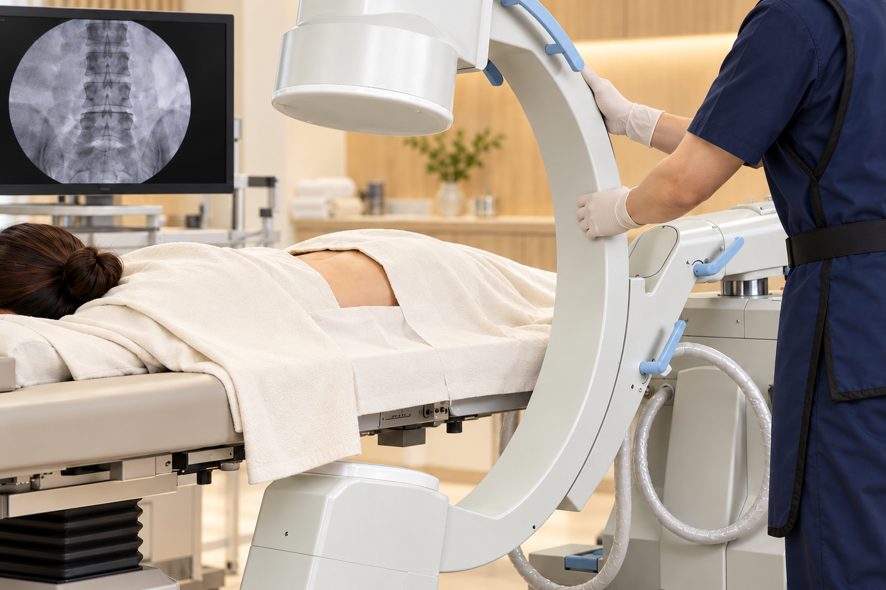
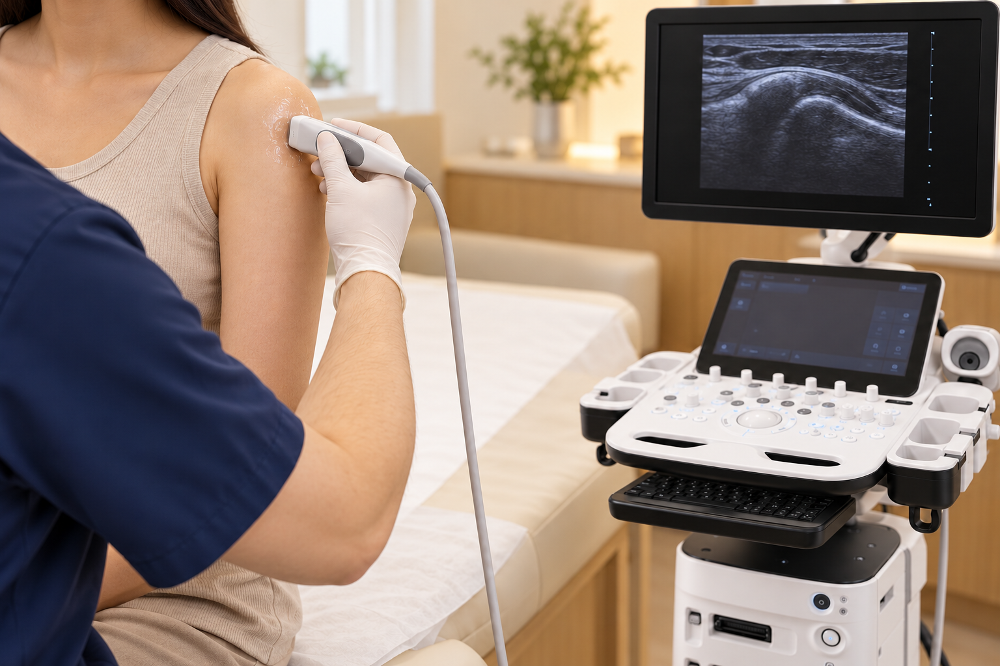
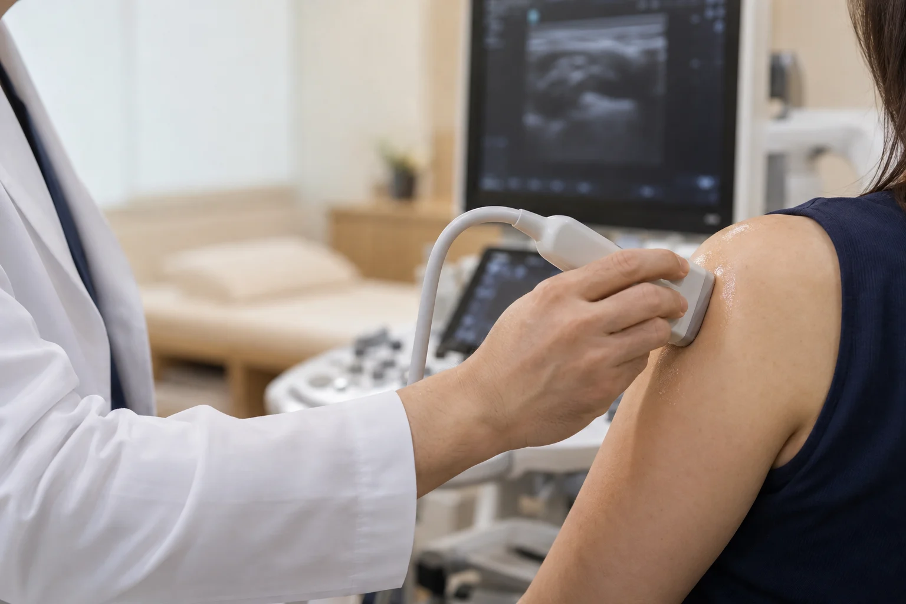
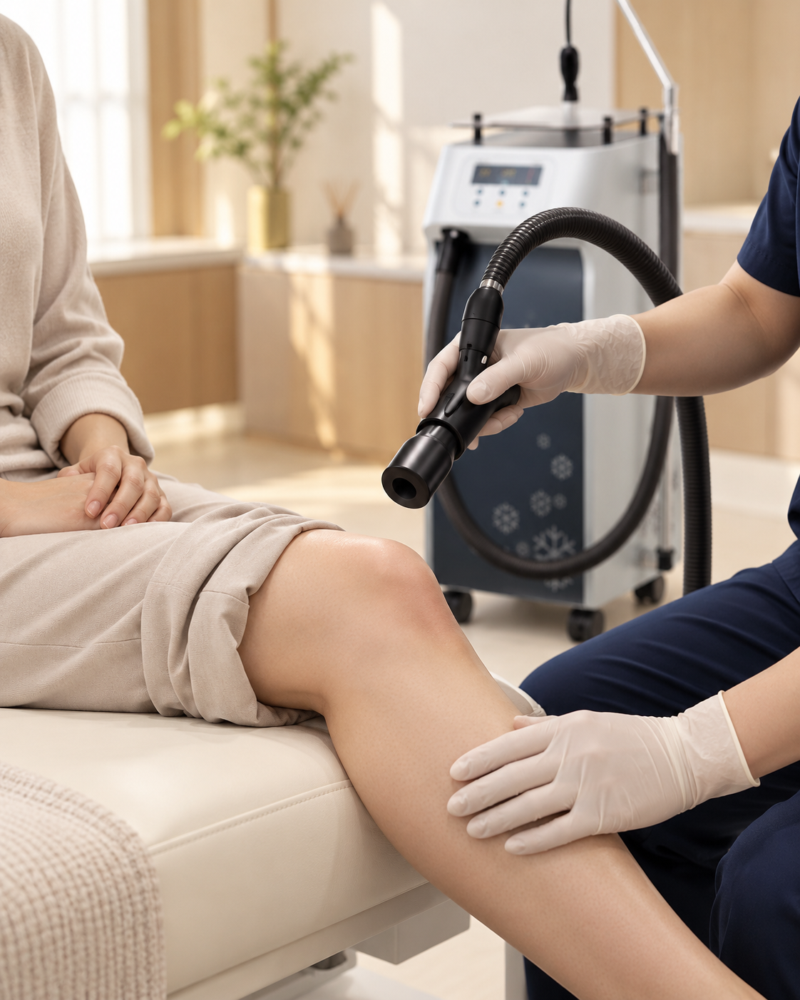
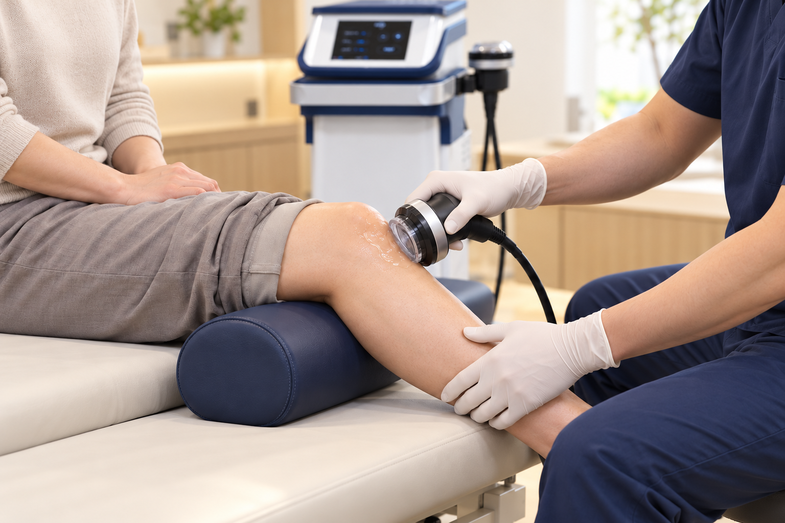
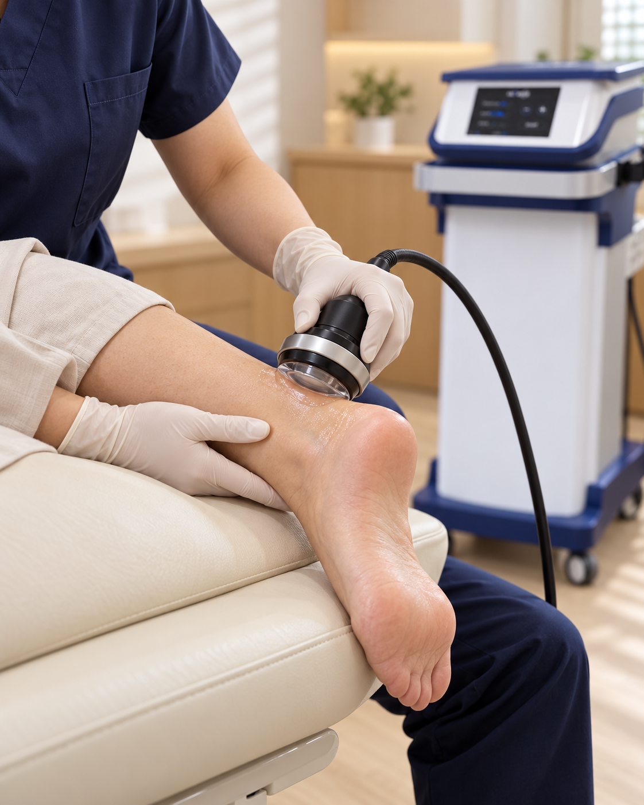

실시간 영상으로 목표 부위를 확인합니다
C-arm 영상장비
C-arm은 척추의 구조와 목표 부위를 실시간 영상으로 확인하며 정밀 척추 신경주사에 활용하는 영상 장비입니다.
영상으로 치료 위치를 살피면서 필요한 부위에 약물을 전달하고, 환자의 상태와 진찰 결과에 맞춰 치료를 진행합니다.

YEOUIDO GITONGCHAN
주요 기능과 장점
실시간 영상으로 위치 확인
척추의 구조와 치료가 필요한 부위를 영상으로 확인합니다. 시술 중에도 목표 부위와 바늘의 위치를 살피며 진행할 수 있습니다.
정밀 척추 신경주사에 활용
통증이 발생하는 척추 신경 주변에 약물을 주입하는 치료에 활용합니다. 영상으로 위치를 확인해 필요한 부위에 접근하도록 돕습니다.
진찰 결과에 따른 치료 계획
증상과 진찰 결과를 함께 확인해 치료할 부위를 결정합니다. 약물과 적용 방법은 환자의 상태에 맞춰 선택합니다.
근골격계 진단에 특화된 첨단 초음파
삼성메디슨 V5 / HS50
삼성메디슨 V5 / HS50 초음파 장비는 척추 · 관절 · 근육 · 신경 등 근골격계 진단과 치료에 특화된 정밀 영상 장비입니다.
방사선을 사용하지 않고 실시간 영상을 통해 조직의 상태를 살펴 진단과 정밀한 치료 계획에 활용합니다.

YEOUIDO GITONGCHAN
주요 기능과 장점

근육·힘줄·신경·관절과 주변 조직 확인
근육과 힘줄, 신경, 관절 및 주변 조직의 상태를 영상으로 살펴봅니다. 증상과 진찰 결과를 함께 확인해 진단에 활용합니다.
빠르고 직관적인 검사 환경
실시간으로 확인한 조직의 상태와 진찰 결과를 함께 살펴 진단과 정밀한 주사치료에 활용합니다.
방사선을 사용하지 않는 검사
초음파를 이용해 조직의 상태를 확인하므로 방사선 노출이 없습니다. 필요한 부위를 반복해서 살펴보는 데 활용할 수 있습니다.
차가운 공기로 통증과 부기를 살피는 냉각치료
Cryo-Jet 냉각치료 장비
Cryo-Jet은 냉각된 공기를 환부에 전달해 국소 부위의 온도를 낮추고 통증 완화와 부종 경감을 돕는 의료용 저온기입니다.
핸드피스로 필요한 부위에 냉풍을 적용하며, 환자의 피부 상태와 냉각 반응을 살펴 바람의 세기와 적용 시간을 조절합니다.
YEOUIDO GITONGCHAN
주요 기능과 장점

냉풍을 이용한 국소 냉각
핸드피스에서 나오는 차가운 공기를 이용해 필요한 부위를 냉각합니다. 환부를 낮은 온도로 유지해 통증과 부기 완화를 돕습니다.
단계별 풍속 조절
바람의 세기를 단계별로 조절할 수 있습니다. 치료 부위의 넓이와 피부 반응을 확인하면서 적용 강도를 맞춥니다.
상태에 맞춘 치료 시간
타이머를 활용해 적용 시간을 관리합니다. 냉각에 대한 민감도와 피부 감각을 확인하며 과도한 냉각을 피하도록 진행합니다.
힘줄과 연부조직의 회복을 돕는 체외충격파
체외충격파 ESWT
체외충격파는 몸 밖에서 발생시킨 충격파 에너지를 피부를 통해 전달해 힘줄과 주변 연부조직의 통증 완화와 기능 회복을 돕는 비수술 치료 장비입니다.
증상이 이어지는 부위를 진찰해 치료가 필요한 조직을 살피고, 통증 반응과 경과에 맞춰 적용 부위·강도·횟수를 조절합니다.

YEOUIDO GITONGCHAN
주요 기능과 장점

절개 없이 전달하는 에너지
피부를 절개하지 않고 핸드피스를 통해 충격파를 전달합니다. 힘줄과 주변 조직의 상태를 살펴 통증 관리와 회복을 돕는 데 활용합니다.
지속되는 힘줄 통증에 활용
족저근막이나 아킬레스건 등 통증이 지속되는 부위에서 치료를 고려할 수 있습니다. 진찰 결과와 기존 치료 반응에 따라 적용 여부를 결정합니다.
반응을 확인하는 맞춤 적용
치료 중 불편감과 피부 반응을 확인하며 강도를 조절합니다. 일시적인 통증·붉어짐·멍이 생길 수 있어 치료 전 상태와 주의사항을 함께 확인합니다.